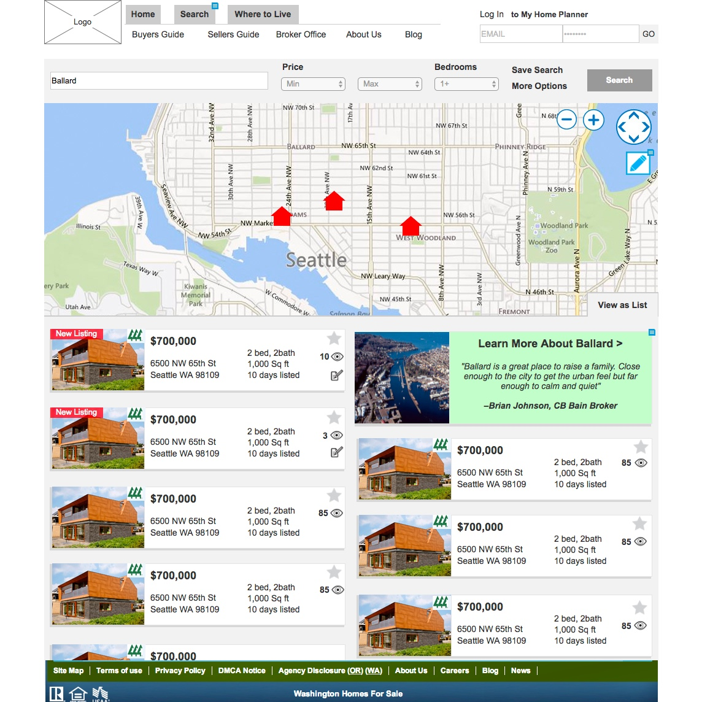

  <div class="pageWrapper workTemplate">
    <div class="pageContainer">

      {% include nav-work.html %}

      <section class="sectionWrapper">
        <div class="projectdescription">
          <h1 class="projectName">Coldwell Banker Bain</h1>
          <h3 class="subhead">Real Estate Search</h3>
          <span class="categoryItem">User Testing</span> + <span class="categoryItem">UX</span> + <span class="categoryItem">Visual Design</span>

        </div>

        <div class="workIntroPara">
          <p><b>Goal:</b> Create a modern experience that utilizes unique, regional knowledge to compete with more digitally established real estate companies.</p>

          <p><b>Deliverables:</b> User testing, Userflows, wireframes, prototype, UI comps</p>
          <p class="prototypeLink"><b>Prototype:</b> <a class="link" href="http://3qo64q.axshare.com/#c=2" target="_blank">http://3qo64q.axshare.com/#c=2</a></p>
        </div>
      </section>

      <section class="singlePhotoContainer">
        
      </section>

      <section class="copyWrapper">
        <div class="copyContainer">

        <p>Coldwell Banker Bain is a local, Northwest real estate company. They reached out to Design Commission looking to revamp their website search functionality. As a part of the Design Commission team I provided user research, prototyping and UI design for this project.</p>


        </div>
      </section>

      <section class="singlePhotoContainer">
        
      </section>

      <section class="copyWrapper">
        <div class="copyContainer">

          <p>We conducted preliminary user tests on the existing website to discover what users felt was missing from the experience. Using this information we created and tested a series of prototypes showcasing potential design solutions. Among other things, users responded positively to our updated content organization, as well as the introduction of local neighborhood information.  </p>

        </div>
      </section>

      <section class="singlePhotoContainer">
        
      </section>

      <section class="copyWrapper">
        <div class="copyContainer">

          <p>After approval from stakeholders, we took all of the information gathered in research and applied it to our final deliverable of full-detail UI mockups. Our solution provided a clean, well structured experience and at the same time allowed Coldwell Banker Bain to showcase their intimate knowledge of the Northwest real estate market.</p>

        </div>
      </section>


      <section class="workNavigation">
        <div class="nextPrevWrapper">
          <a href="xinuos.html"><span class="previous navBtn">Prev</span></a>
          <a href="wireme.html"><span class="next navBtn">Next</span></a>
        </div>
        <h1 class="pageNumber ">3/5</h1>
      </section>

  </div>
</div>
